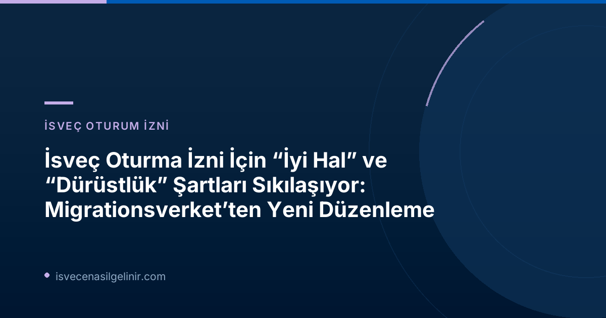

Yeni Düzenleme Ne Anlama Geliyor?
Yeni yasal düzenlemelerle birlikte, Migrationsverket artık sadece İsveç'te suç işlemiş kişilerin başvurularını değil, aynı zamanda "iyi hal" (vandel) konusunda eksikleri olanların başvurularını da daha geniş bir kapsamda değerlendirebilecek. Bu, suç teşkil etmese dahi toplumsal kurallara aykırı davranışların oturma izni süreçlerinde aleyhte bir faktör olabileceği anlamına geliyor.
“Vandel” (İyi Hal) Kavramı Nedir?
"Vandel", bir kişinin toplumsal kurallara uygunluğunu, dürüstlüğünü ve genel davranışlarını tanımlayan bir İsveççe terimdir. Migrationsverket, "vandelde eksiklik" olarak kabul edilebilecek davranışları şu şekilde örneklendiriyor:
- Tekrarlanan ve süreklilik arz eden kural ihlalleri
- Yanlış veya yanıltıcı bilgi verme
- Dürüst olmayan yollarla geçimini sağlama
- Suç örgütleriyle ilişki içinde olma
Suç Teşkil Etmeyen Davranışlar da Kapsamda mı?
Evet, önemli bir değişiklik de burada yatıyor. Migrationsverket'in yetkilendirdiği gibi, suç teşkil etmeyen ancak yine de toplumsal kuralları ihlal eden davranışlar da artık oturma izni değerlendirmelerinde dikkate alınacak. Bu tür davranışlar, adli sicilde kaydı olmasa bile ret kararına veya mevcut iznin iptaline yol açabilir.
Migrationsverket "İyi Hal" Değerlendirmesini Nasıl Yapacak?
Oturma izni başvurusu alındığında, başvuru sahibinin "kurala uygunluk" ve "iyi hal" durumuna dair kapsamlı bir değerlendirme yapılacak. Bu değerlendirme sürecinde Migrationsverket, diğer kamu kurumlarından da bilgi toplayabilecek. Örneğin:
- Ödeme emirleri (betalningsförelägganden) ile ilgili bilgiler
- Geçim desteği, sosyal sigortalar ve diğer yardımlar için beyan edilen bilgiler
Bu bilgiler, başvuru sahibinin genel dürüstlük ve sorumluluk seviyesini ortaya koymak amacıyla kullanılacak.
Bireysel Değerlendirme ve Orantılılık İlkesi
Migrationsverket, değerlendirmeleri her zaman bireysel bazda ve davanın özel koşullarına göre yapacaktır. Tek seferlik ve önemsiz nitelikteki "kötü hal" durumları genellikle ret nedeni olmayacakken, tekrarlanan ve devamlılık arz eden davranışlar daha ciddi sonuçlar doğurabilir. Verilecek her karar, İsveç idare hukukunun temel ilkeleri olan yasallık, nesnellik ve tarafsızlık prensiplerine uygun olarak gerekçelendirilmelidir.
Değerlendirme aynı zamanda, bireyin oturma iznine sahip olma hakkı ile toplumun düzenli ve dürüst vatandaşlara sahip olma menfaati arasındaki dengeyi de gözetecektir. Bu, bir tür orantılılık ilkesi çerçevesinde bir karara varılacağı anlamına gelir.
Yeni Kurallardan Etkilenen ve Etkilenmeyen Oturum İzinleri
Yeni düzenlemeler, tüm oturma izni türlerini aynı şekilde etkilemiyor. Hangi tür izinlerin bu sıkılaşmış kurallara tabi olduğu, hangilerinin olmadığı aşağıdaki tabloda özetlenmiştir:
| Oturma İzni Türü | Yeni "İyi Hal" Kurallarından Etkilenme Durumu |
|---|---|
| AB hukuku temelli olmayan oturma izinleri (örn. belirli çalışma izinleri, bazı aile birleşimi türleri) | GENELDE ETKİLENİR: Sıkılaştırılmış kurallara tabidir. |
| Uluslararası koruma (sığınma) başvurusu temelindeki oturma izinleri | ETKİLENMEZ: Bu süreçler yeni "iyi hal" kurallarının dışında tutulmuştur. |
| AB hukuku temelli oturma izinleri (çalışma, eğitim veya aile birleşimi direktifleri kapsamında olanlar) | ETKİLENMEZ: Bu izinler AB hukukunun koruması altındadır ve yeni kurallara tabi değildir. |
İsveç'te ikamet ederken yasalara ve düzenlemelere uyum, gelecekteki statünüz için hayati önem taşımaktadır. İsveç vatandaşlığına geçiş süreci ve vatandaşlık sınavı hakkında güncel ve detaylı bilgi için sverigemedborgarskapsprov.com adresini ziyaret edebilirsiniz.
Sıkça Sorulan Sorular (SSS)
Yeni kurallar ne zaman yürürlüğe girdi?
Yeni ve sıkılaştırılmış "iyi hal" ve "dürüstlük" kuralları 13 Temmuz 2026 tarihinden itibaren yürürlüğe girmiştir.
Ödeme emirleri veya sosyal yardımlar hakkında yanlış bilgi vermek oturum iznimi etkiler mi?
Evet, Migrationsverket, ödeme emirleri (betalningsförelägganden) ve geçim desteği veya sosyal yardımlar için verilen bilgiler gibi diğer resmi kaynaklardan da veri toplayarak "iyi hal" değerlendirmesini yapacaktır. Yanlış veya yanıltıcı bilgi verme, "vandelde eksiklik" olarak kabul edilebilir ve başvurunuzu veya mevcut oturum izninizi olumsuz etkileyebilir.
AB hukuku kapsamındaki oturum izinleri için de bu kurallar geçerli mi?
Hayır, AB hukuku kapsamında verilen çalışma, eğitim veya aile birleşimi gibi oturum izinleri bu sıkılaştırılmış "iyi hal" kurallarının kapsamı dışında tutulmuştur.
Önemli Not:
Bu yazı bilgilendirme amaçlıdır ve yasal tavsiye niteliği taşımaz. İsveç göçmenlik yasaları karmaşık olabilir ve kişisel durumunuza göre farklılık gösterebilir. En doğru ve güncel bilgi için her zaman Migrationsverket'in resmi duyurularını takip etmeniz ve gerekirse bir hukuk uzmanına danışmanız önerilir.
Referanslar:
- Migrationsverket: "Skärpta krav på skötsamhet och hederlighet"
- İsveç Vatandaşlık Sınavı: sverigemedborgarskapsprov.com
İsveç'te Yasal Statünüzü Güvence Altına Alın
Yeni göçmenlik yasaları hakkında bilgi edinmek ve İsveç'teki geleceğinizi şekillendirmek için uzmanlarımızdan destek alın.